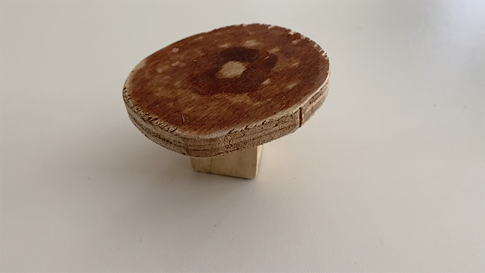
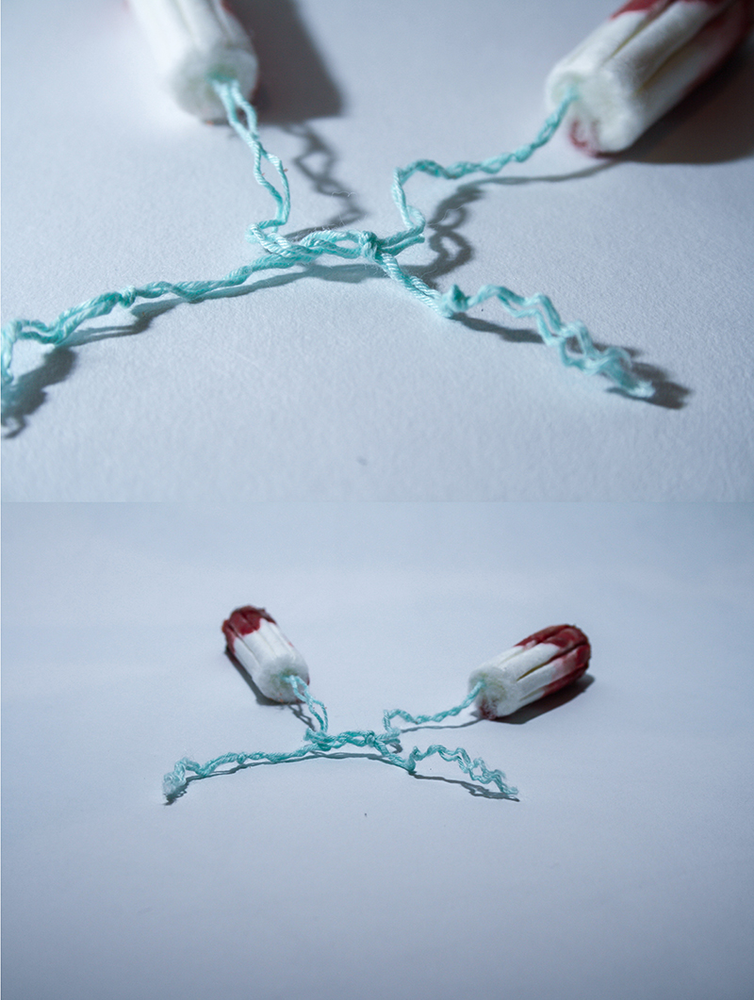
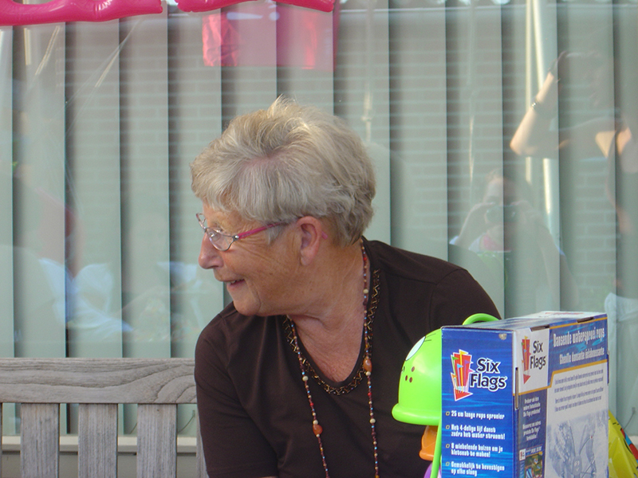

Stiltes, nee die bestaan niet als ik (Gina) in de buurt ben.
Valt er een stilte dan ben ik de eerste die ervoor zorgt dat er weer een ander onderwerp op de tafel komt.
De leiding nemen is mij zeker ook niet vreemd. Ik zet graag mensen aan het werk, maar dat betekent zeker niet dat ik zelf niks doe.
Je kan mij omschrijven als een open persoon. Er zijn niet veel dingen die ik niet met andere deel.
Dit komt ook naar voor in de onderwerpen die in aansnijdt in de projecten voor de studie Communicatie en Multmedia Design (CMD).
Ik gebruik hier namelijk vaak taboes. Hierbij kun je bijvoorbeeld denken aan zaken die met het vrouwelijk lichaam te maken hebben,
zoals ongesteldheid. Het is voor mij geen probleem om hier open over te praten.
Ik volg de studie CMD aan de hogeschool Avans in Breda.
CMD is een veelzijdige studie. Het ene moment ben je bezig het maken van website,
het andere moment maak je styleguides en weer een volgend moment bent je aan het werken met Arduino.
Omdat je met zo veel verschillende dingen bezig bent kan je er goed achter komen waar je interesses liggen en waar je goed in bent.
Creatief zijn op verschillende manieren zit in me.
Maar dit uitte zich vroeger natuurlijk op andere manieren dan waar we op de opleiding mee bezig zijn.
Hierbij kun je denken aan waterverf schilderen, mijn kamer herinrichten en kleien.
Op de middelbare school begon ik met het werken met Photoshop.
Nu zijn de skills die je nodig hebt voor illustrator, Premiere Pro, Lightroom en InDesign er ook bij gekomen door de opleiding CMD.
Ook in mijn vrije tijd vind ik het leuk om met deze programma’s te werken. Ik maak dan graag kaartje of edit mijn vakantiefilmpjes.
Recent Work

caption 1

caption 1
Tepeltafel
Het idee achter deze tafel is dat een tepel van een man op internet mag, maar als een vrouw haar tepel op het internet zet komt er al snel haat, kritiek of wordt de foto door app verwijderd.
Deze tafel lijkt op een tepel maar in eerste instantie, zou je niet gelijk denken 'het is een tepel'.
Als je er na een tijdje achter komt dat het een tepel is, denk je waarschijnlijk 'oh best normaal'.
Video!

Oma
Het thema van de module was Roots. Ik kwam als snel uit op mijn oma.
Mijn oma is in 2007 overleden. Toen mijn oma overleedt, viel mijn tand er al snel hierna uit.
Ik wilde toen heel graag aan haar vertellen dat mijn tand eruit was.
Met dit idee in mijn hoofd heb ik mijn familie gevraagd wat zij nog graag aan oma wilde vertellen.
Video!
Periodbuddy's
Als twee vrouwen op dezelfde tijd ongesteld zijn dan voel je een band. Je gaat beiden door de maandelijkse periode heen waarin je last hebt van je baarmoeder.
Ook gaan je hormonen en daardoor je stemming alle kanten op. Doordat je tegelijkertijd ongesteld bent kan je samen over je kwaaltjes praten en samen lekker zeuren.
Je kan met een man ook over je ongesteldheid praten. Die zullen misschien empathie tonen, maar volledig begrijpen wat je voelt doen ze nooit.
In dit werk zie je twee tampons waarbij er een knoop zit in de touwtjes.
De knoop staat symbool voor de verbinding tussen de vrouwen tijdens deze maandelijkse periode.
Dit is een verbinding die mannen nooit zullen voelen.

HealthShirt
Het HealthShirt is speciaal gemaakt voor verlamde mensen die niet kunnen praten.
Het shirt is voor alle leeftijden en ziet er gewoon uit als een normaal shirt.
In het shirt zitten drie verschillende sensoren die zijn verbonden met de arduino.
Het gaat om de hartslagsensor, de zweetsensor en de warmtesensor.
De persoonlijke verzorger wordt gealarmeerd doordat de kamer van kleur verandert.
Als de hartslag verhoogd, verandert de kamer in de kleur groen.
Als de lichaamstemperatuur te hoog is, verandert de kamer in de kleur blauw.
De kamer verandert in de kleur geel/oranje wanneer het zweetpercentage te hoog is.
Doordat de verlamde persoon niet kan voelen doet het shirt dat voor hem/haar.
Het shirt is het medium, de verlamde is de zender en de verzorger is de ontvanger.

Big Mac Salad
Stel dat camera’s kunnen bodyshamen, dan zou je misschien niet meer naar binnen mogen bij de McDonalds omdat de camera je te dik vindt.
Restaurants zouden dan ongezond eten er gezond uit laten zien door het bijvoorbeeld te laten lijken op een salade.

Immersive Storytelling
Tijdens deze module heb ik leren werken met blender. Skins moesten er worden gemaakt voor de 3d modellen.
Ik heb mijn groepje moeten sturen welke stijl wij gingen houden dus daarom moodboards gemaakt.
art director, foto van benny voor en na, moodboard foto van de game
Storyboard immersive storytelling:
Video!
Contact
Bent u geintereseerd om met mij te werken of heeft u vragen?


{kind=link}
{kind=link}
{kind=link}